Soru 1Cevap: B
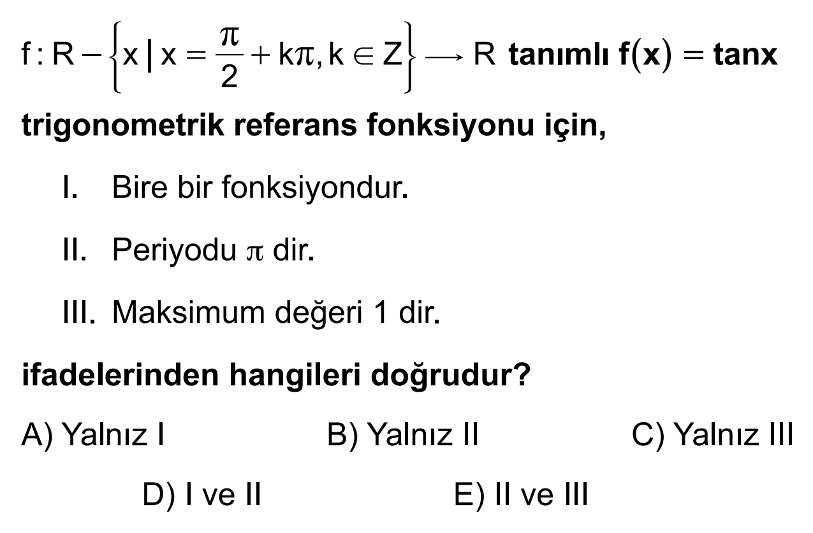
Çözüm
- $\tan x$ periyodik olduğundan aynı değeri tekrar alır → bire bir değildir (I yanlış).
- $\tan(x+\pi) = \tan x$ → periyot $\pi$ (II doğru).
- Görüntü kümesi $\mathbb{R}$, maksimum değeri yoktur (III yanlış). Yalnız II.
Cevap: B
Soru 2Cevap: D
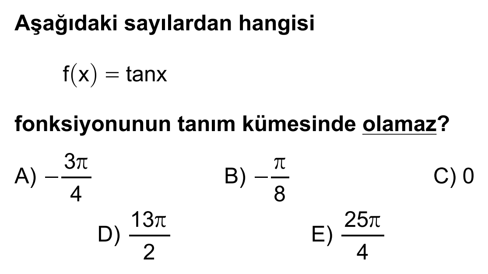
Çözüm
- $\tan x$, $x = \frac{\pi}{2} + k\pi$ değerlerinde tanımsızdır.
- $\frac{13\pi}{2} = 6\pi + \frac{\pi}{2}$
- Bu değer tanım kümesinde olamaz: D.
Cevap: D
Soru 3Cevap: D
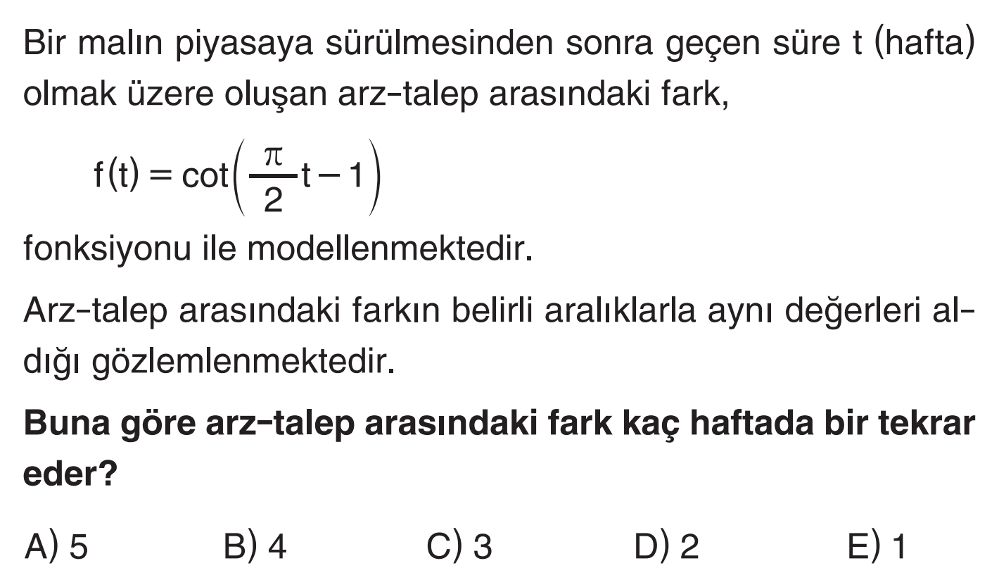
Çözüm
- $\cot(ax+b)$'nin periyodu $\frac{\pi}{|a|}$.
- $a = \frac{\pi}{2}$
- $T = \frac{\pi}{\pi/2} = 2$ hafta.
Cevap: D
Soru 4Cevap: D
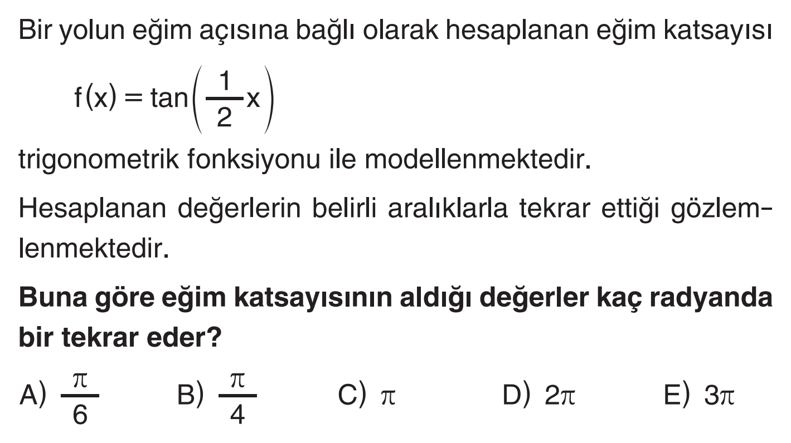
Çözüm
- $\tan(ax)$'in periyodu $\frac{\pi}{|a|}$.
- $a = \frac12$
- $T = \frac{\pi}{1/2} = 2\pi$ radyan.
Cevap: D
Soru 5Cevap: E
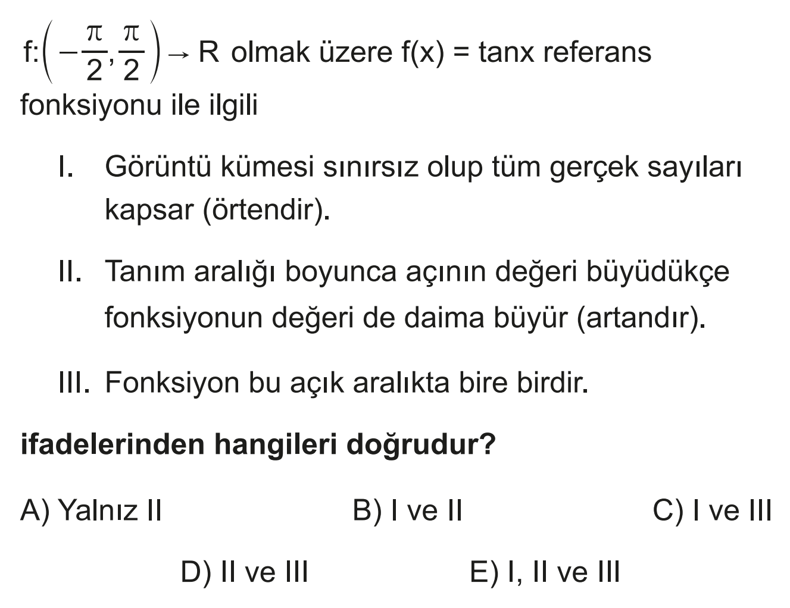
Çözüm
- $\left(-\frac{\pi}{2},\frac{\pi}{2}\right)$'de $\tan x$ tüm gerçek sayıları alır → I doğru.
- Bu aralıkta sürekli artar → II doğru.
- Artan fonksiyon bire birdir → III doğru. I, II ve III.
Cevap: E
Soru 6Cevap: E
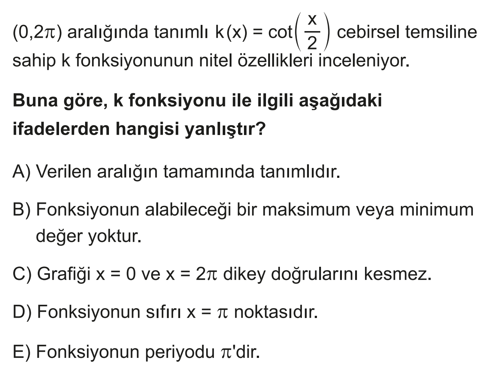
Çözüm
- $x\in(0,2\pi)$ ise $\frac{x}{2}\in(0,\pi)$; cot burada tanımlı ve azalan (A, B doğru); asimptotlar $x = 0$, $x = 2\pi$ (C doğru).
- $\cot\frac{x}{2} = 0$ ⇔ $\frac{x}{2} = \frac{\pi}{2}$ ⇔ $x = \pi$ (D doğru).
- Periyot $\frac{\pi}{1/2} = 2\pi$; \"$\pi$\" diyen E yanlıştır.
Cevap: E
Soru 7Cevap: A
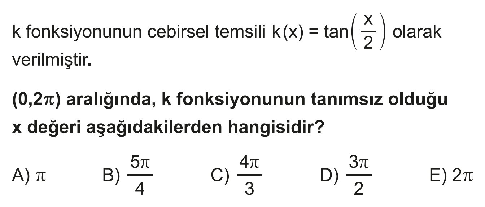
Çözüm
- $\tan u$, $u = \frac{\pi}{2} + k\pi$ için tanımsızdır.
- $\frac{x}{2} = \frac{\pi}{2} + k\pi$ → $x = \pi + 2k\pi$.
- $(0,2\pi)$'de yalnız $x = \pi$.
Cevap: A
Soru 8Cevap: E
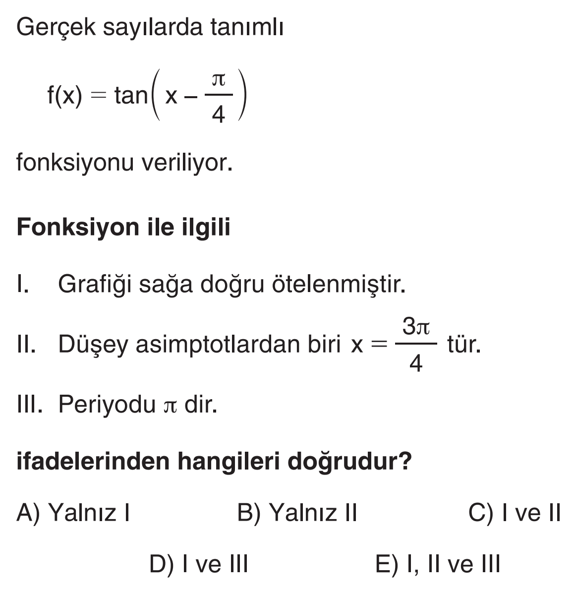
Çözüm
- $x$ yerine $x - \frac{\pi}{4}$ → grafik $\frac{\pi}{4}$ sağa ötelenmiş (I doğru).
- Asimptot: $x - \frac{\pi}{4} = \frac{\pi}{2} + k\pi$ → $x = \frac{3\pi}{4} + k\pi$ (II doğru).
- x'in katsayısı 1 → periyot $\pi$ (III doğru).
Cevap: E
Soru 9Cevap: A
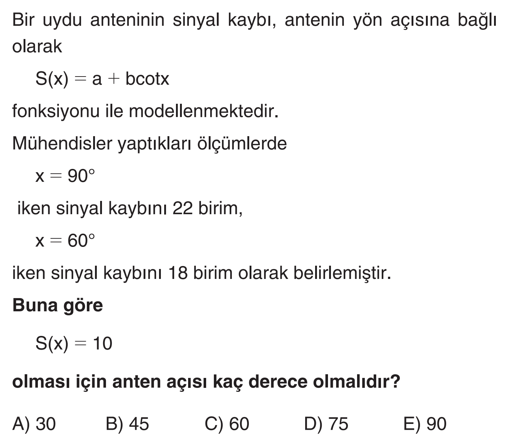
Çözüm
- $x = 90^\circ$: $\cot90^\circ = 0$ → $a = 22$.
- $x = 60^\circ$: $22 + b\cdot\frac{\sqrt3}{3} = 18$ → $b = -4\sqrt3$.
- $22 - 4\sqrt3\cot x = 10$ → $\cot x = \sqrt3$ → $x = 30^\circ$.
Cevap: A
Soru 10Cevap: C
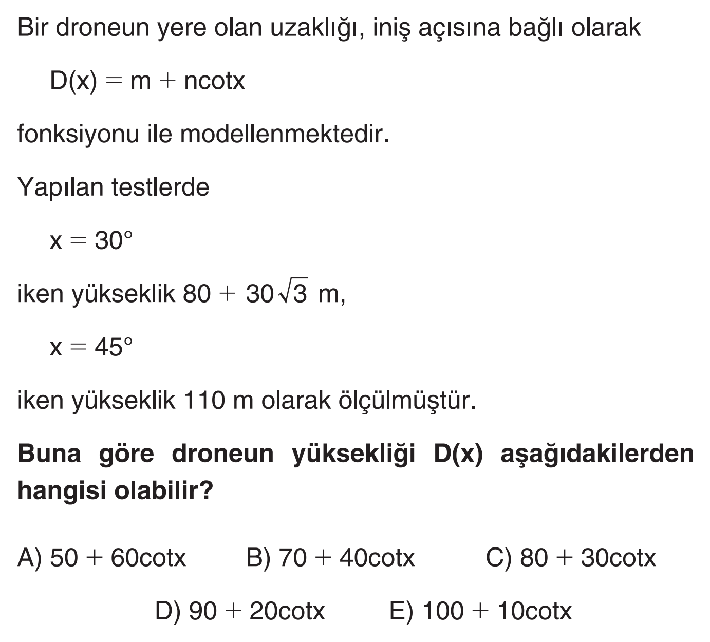
Çözüm
- $x = 45^\circ$: $m + n = 110$.
- $x = 30^\circ$: $m + n\sqrt3 = 80 + 30\sqrt3$ → $n = 30$, $m = 80$.
- $D(x) = 80 + 30\cot x$.
Cevap: C
Soru 11Cevap: E
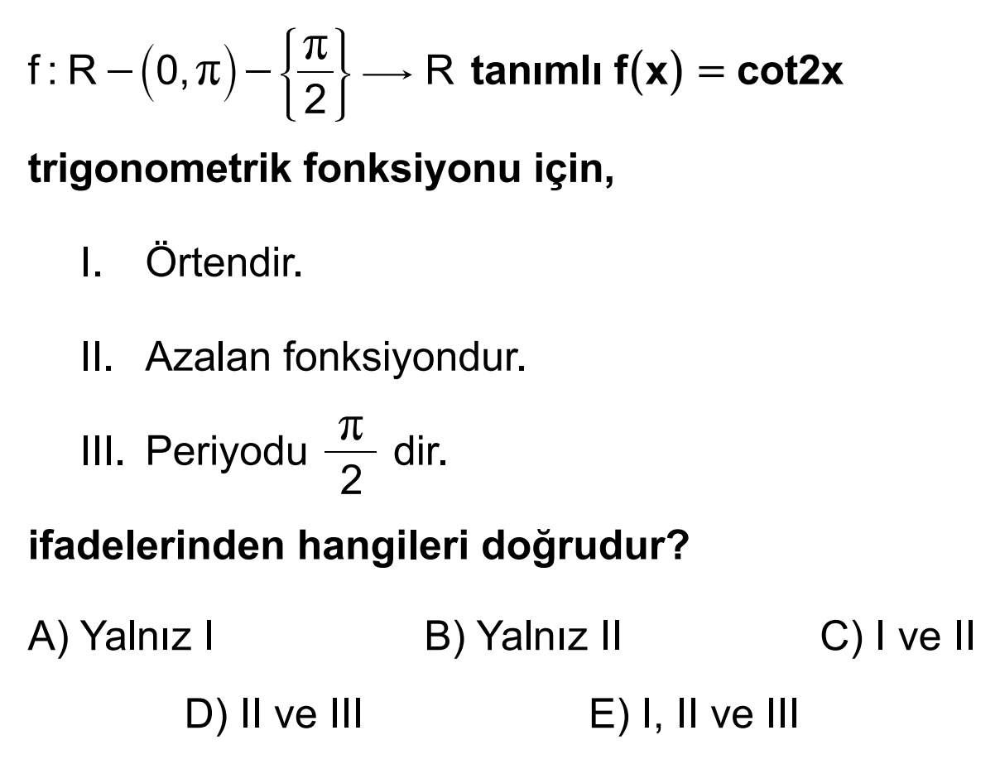
Çözüm
- $\cot2x$ tüm gerçek sayı değerlerini alır → örten (I).
- Tanımlı olduğu her aralıkta azalır → azalan (II).
- Periyot $\frac{\pi}{2}$ (III). I, II ve III.
Cevap: E
Soru 12Cevap: B
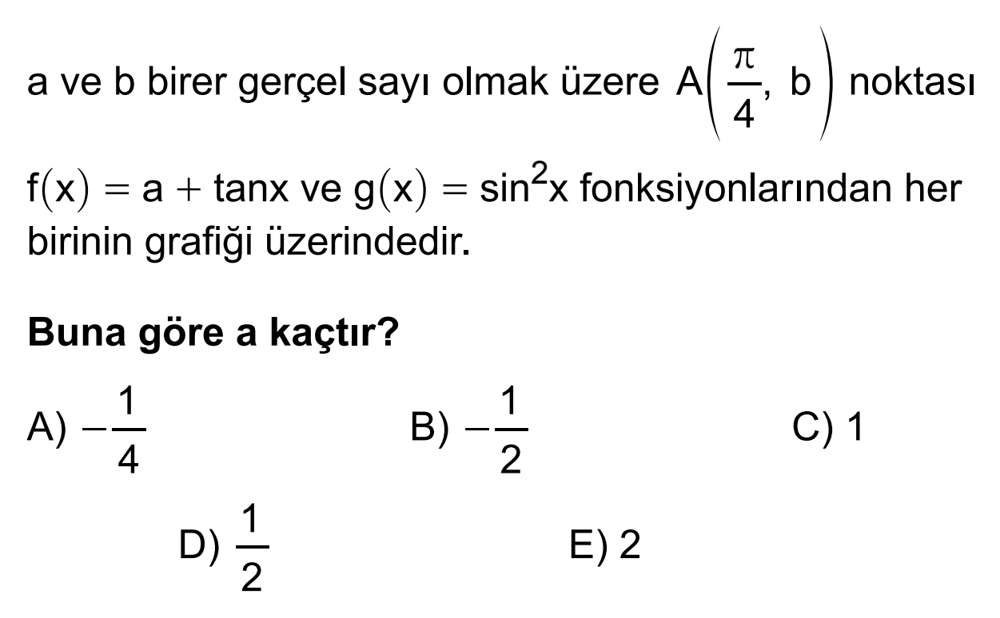
Çözüm
- A, g'nin grafiğinde: $b = \sin^2\frac{\pi}{4} = \frac12$.
- A, f'nin grafiğinde: $a + \tan\frac{\pi}{4} = b$ → $a + 1 = \frac12$.
- $a = -\frac12$.
Cevap: B
Soru 13Cevap: C
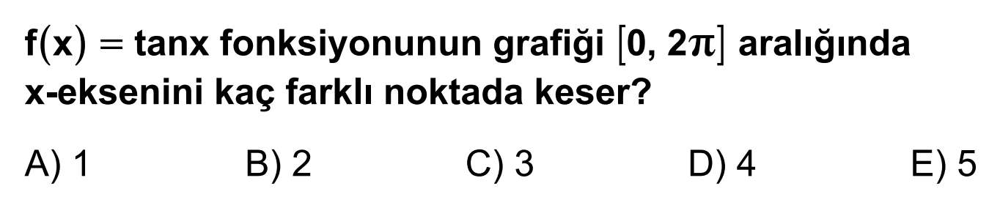
Çözüm
- Grafik x eksenini $\tan x = 0$ olan noktalarda keser.
- $x = k\pi$ → $[0,2\pi]$'de $0, \pi, 2\pi$.
- 3 farklı nokta.
Cevap: C
Soru 14Cevap: E
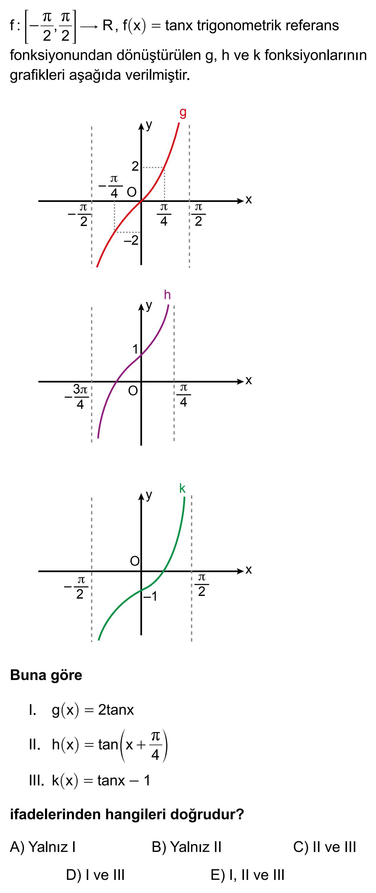
Çözüm
- g: $g\left(\frac{\pi}{4}\right) = 2$ → $2\tan\frac{\pi}{4} = 2$ ✓ (I).
- h: sıfırı $-\frac{\pi}{4}$, $h(0) = 1$ → $\tan\left(x+\frac{\pi}{4}\right)$ ✓ (II).
- k: $k(0) = -1$, sıfırı $\frac{\pi}{4}$ → $\tan x - 1$ ✓ (III).
Cevap: E
Soru 15Cevap: C
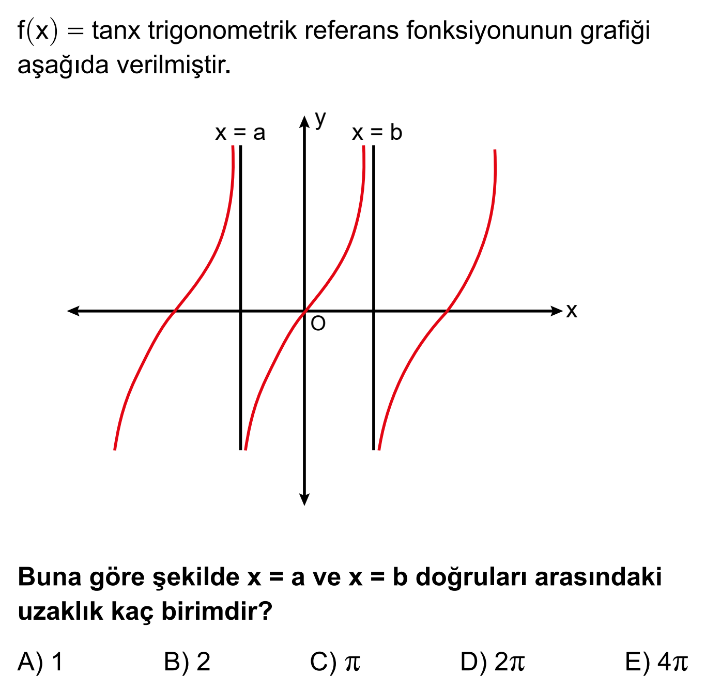
Çözüm
- $x = a$ ve $x = b$, orijinden geçen kolun iki yanındaki asimptotlardır.
- $a = -\frac{\pi}{2}$, $b = \frac{\pi}{2}$.
- Uzaklık $\pi$ (tanjantın periyodu).
Cevap: C
Soru 16Cevap: B
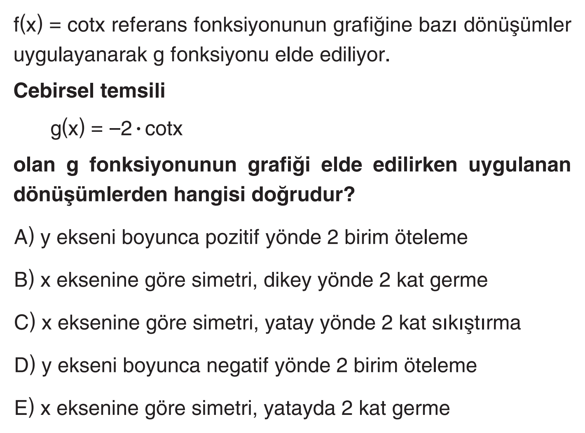
Çözüm
- $\cot x \to -\cot x$: grafik x eksenine göre yansır.
- $-\cot x \to -2\cot x$: değerler 2 katına çıkar → dikey yönde 2 kat germe.
- x eksenine göre simetri ve dikey 2 kat germe.
Cevap: B
Soru 17Cevap: E
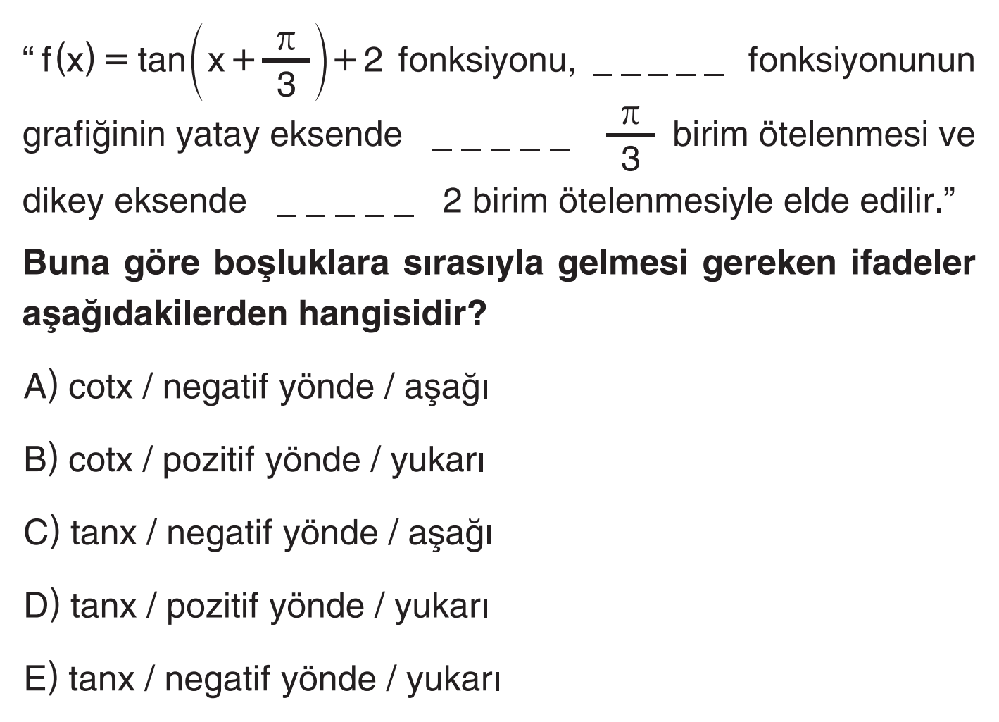
Çözüm
- Fonksiyon $\tan x$'ten türetilmiştir.
- $x$ yerine $x + \frac{\pi}{3}$ → yatayda negatif yönde $\frac{\pi}{3}$ öteleme.
- $+2$ → dikeyde yukarı 2 birim: tanx / negatif yönde / yukarı.
Cevap: E
Soru 18Cevap: C
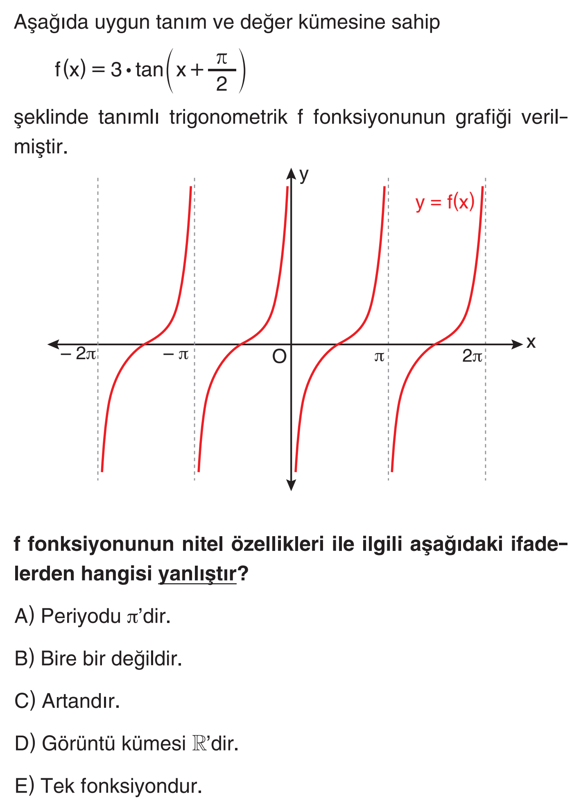
Çözüm
- Periyot $\pi$ (A doğru); periyodik olduğundan bire bir değil (B doğru); görüntü kümesi $\mathbb{R}$ (D doğru).
- $\tan\left(x+\frac{\pi}{2}\right) = -\cot x$ → $f(x) = -3\cot x$; $f(-x) = 3\cot x = -f(x)$, tek fonksiyondur (E doğru).
- Tüm tanım kümesinde artan değildir ($f(-\frac{\pi}{4}) = 3 > f(\frac{\pi}{4}) = -3$); \"Artandır\" yanlış.
Cevap: C
Soru 19Cevap: A
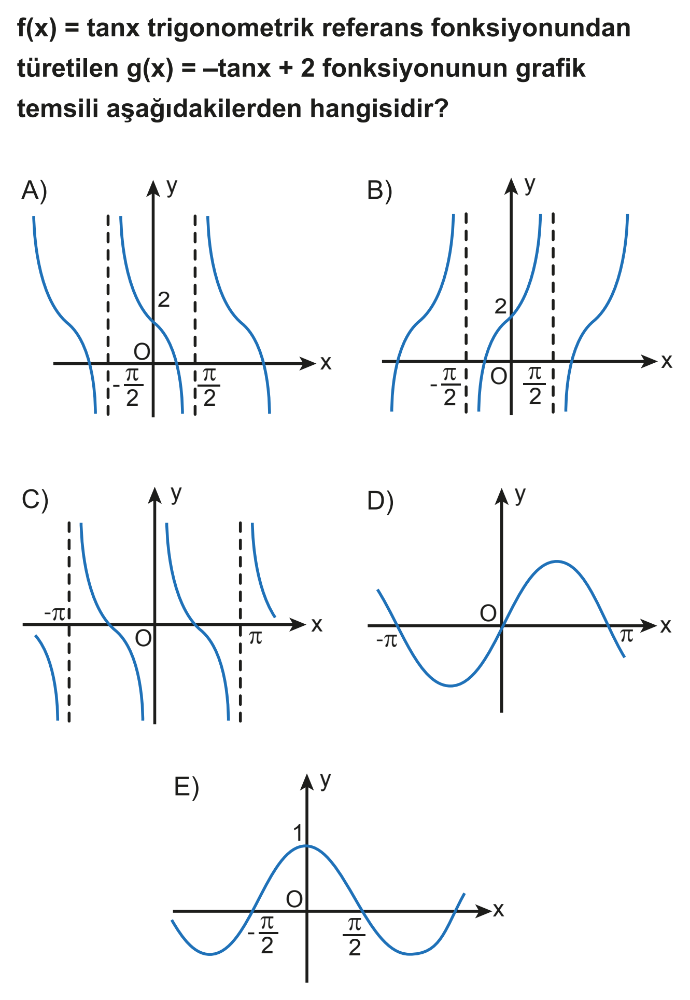
Çözüm
- $-\tan x$ azalan; $+2$ ile grafik 2 birim yukarı kayar.
- $g(0) = 2$, asimptotlar $x = \pm\frac{\pi}{2}$.
- Azalan kolları olan ve y eksenini 2'de kesen grafik A.
Cevap: A
Soru 20Cevap: C
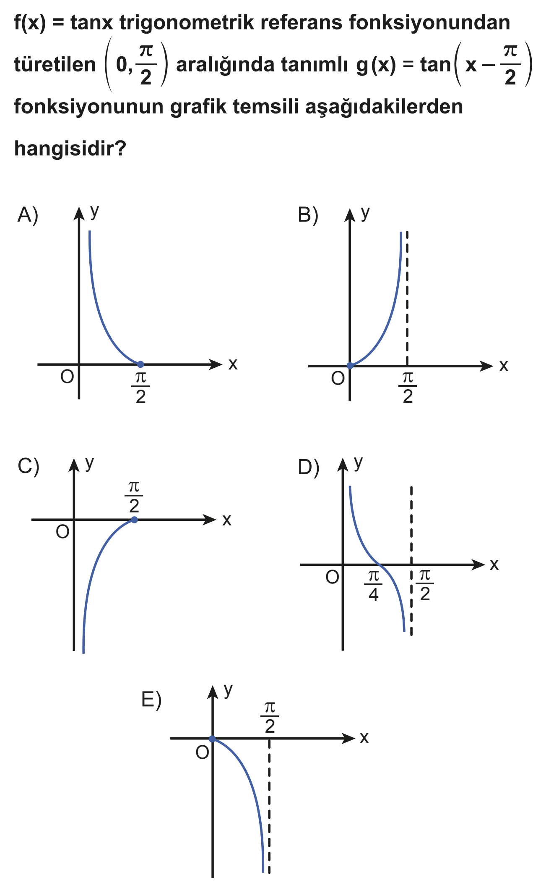
Çözüm
- $\tan\left(x-\frac{\pi}{2}\right) = -\cot x$.
- $x\to0^+$ için $-\cot x\to-\infty$; $x = \frac{\pi}{2}$'de $-\cot\frac{\pi}{2} = 0$.
- $(0,\frac{\pi}{2})$'de $-\infty$'dan 0'a artan grafik C.
Cevap: C
Soru 21Cevap: D
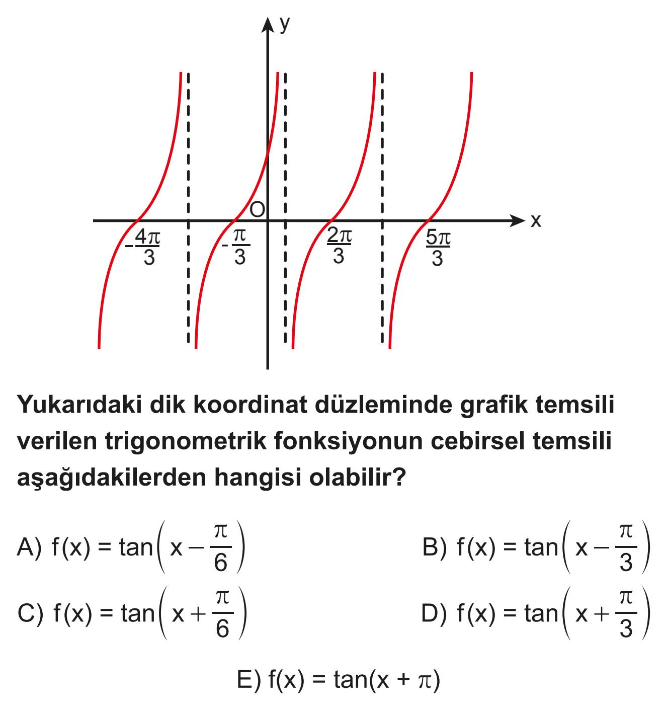
Çözüm
- Sıfırlar $-\frac{\pi}{3}$, $\frac{2\pi}{3}$, … → tanjant kolu $x = -\frac{\pi}{3}$'te x eksenini keser.
- $\tan(x + c)$'nin sıfırı $x = -c$ → $c = \frac{\pi}{3}$.
- $f(x) = \tan\left(x+\frac{\pi}{3}\right)$.
Cevap: D
Soru 22Cevap: E
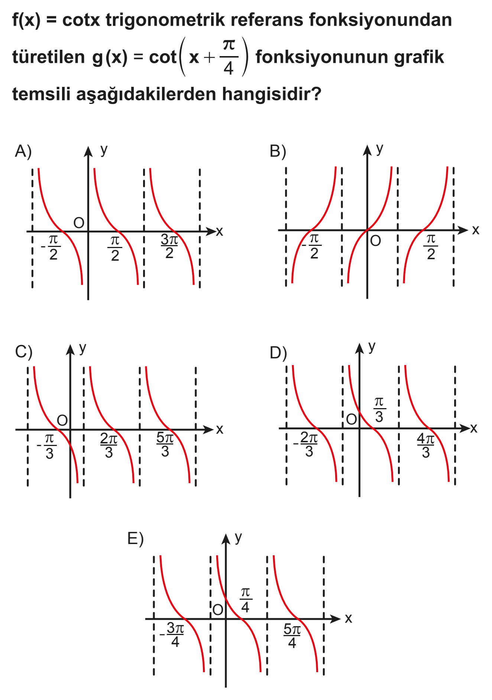
Çözüm
- $\cot\left(x+\frac{\pi}{4}\right) = 0$ ⇔ $x + \frac{\pi}{4} = \frac{\pi}{2}$ ⇔ $x = \frac{\pi}{4}$.
- Asimptotlar: $x + \frac{\pi}{4} = k\pi$ → $x = -\frac{\pi}{4}, \frac{3\pi}{4}, …$
- Sıfırı $\frac{\pi}{4}$, azalan kolları olan grafik E.
Cevap: E
Soru 23Cevap: A
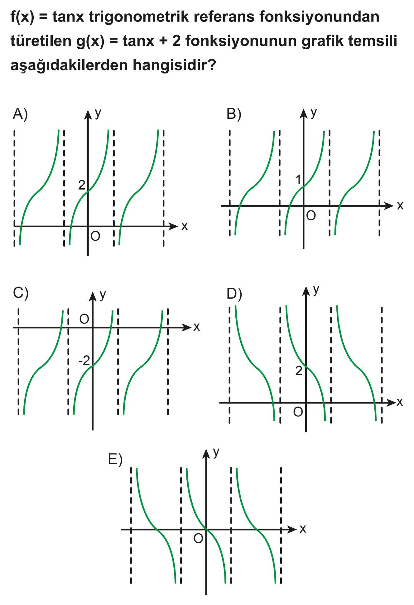
Çözüm
- $\tan x + 2$, $\tan x$'in 2 birim yukarı ötelenmişidir.
- $g(0) = 2$; kollar artandır; asimptotlar $\pm\frac{\pi}{2}$.
- Bu özellikteki grafik A.
Cevap: A
Soru 24Cevap: C
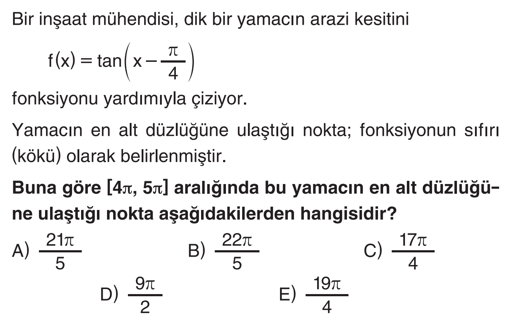
Çözüm
- $\tan\left(x-\frac{\pi}{4}\right) = 0$ ⇔ $x - \frac{\pi}{4} = k\pi$.
- $x = \frac{\pi}{4} + k\pi$.
- $[4\pi,5\pi]$'de $k = 4$: $x = \frac{17\pi}{4}$.
Cevap: C